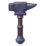
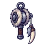
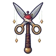

ค้างคาวผลึก
มอนธาตุดิน Lv 55–70
เจอที่
| แมพ | โซน | Lv | ภูมิภาค |
|---|---|---|---|
| เหมืองลึกผลึกส้ม | 62–68 | แดนใต้สีแดง | |
| เหมืองลึกผลึกส้ม | ห้องผลึกใหญ่ | 68–70 | แดนใต้สีแดง |
| ทางรางเหมืองแขวน | 55–69 | แดนใต้สีแดง | |
| ห้องสูบน้ำเหมืองท่วม | 62–68 | แดนใต้สีแดง | |
| ห้องสูบน้ำเหมืองท่วม | เครื่องสูบน้ำยักษ์ | 68–70 | แดนใต้สีแดง |
| โถงหินจีโอด | 62–68 | แดนใต้สีแดง | |
| โถงหินจีโอด | จีโอดยักษ์ | 68–70 | แดนใต้สีแดง |
| ค่ายคนงานใต้ดิน | 62–68 | แดนใต้สีแดง | |
| ค่ายคนงานใต้ดิน | ปล่องลิฟต์เหมือง | 68–70 | แดนใต้สีแดง |
| หอรากมืด (Dark Root) | รากกินดาว | 71–80 |
ค่าสถานะตามเลเวล
| Lv | HP | ATK | DEF | MDEF | EXP | Job |
|---|---|---|---|---|---|---|
| 55 | 11,550 | 107–160 | 13 | 12 | 67 | 50 |
| 62 | 15,812 | 121–180 | 15 | 13 | 75 | 56 |
| 70 | 22,500 | 139–210 | 17 | 15 | 84 | 63 |
ตีด้วยธาตุไหนดี
แรงขึ้น: ไฟ ×1.5 พิษ ×1.25
เบาลง: ลม ×0.5 ดิน ×0.25
วัตถุดิบที่ดรอป
| ของ | โอกาส | |
|---|---|---|
| ปีกผลึกค้างคาว | 55% | 1 ชิ้น (15% ได้ 2) |
อุปกรณ์ที่ดรอป (6)
| ของ | โอกาส |
|---|---|
 ค้อนยักษ์ทั่งตีเหล็ก | 0.25% |
 ด้ายเหล็กเขี้ยวหมาป่า | 0.25% |
| ชุดเรนเจอร์ป่าลึก (เสื้อ) | 0.15% |
| ชุดเรนเจอร์ป่าลึก (กางเกง + รองเท้า) | 0.15% |
 ไม้เชิดหุ่นกรรไกร | 0.12% |
| ชุดเรนเจอร์ป่าลึก (เข็มกลัดใบไม้เงิน) | 0.05% |
สกิล
ร่างแข็ง (Lv 25+) · ร่างแข็ง (Lv 60+) · ทุบพื้น (Lv 60+)